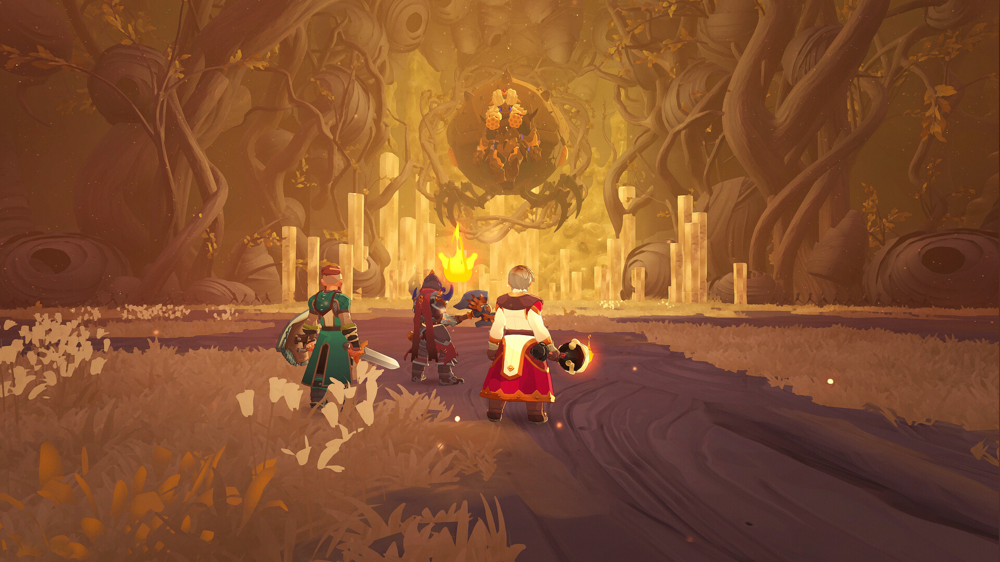

Official
Early Access Launch Trailer
The clearest introduction to Farever's world, traversal and combat fantasy.
Clear answers for Farever's classes, weapons, builds and dungeons—built for adventurers who would rather explore than search.
Start with the problem in front of you, then follow the trail to your next upgrade or dungeon clear.
Learn the first-session route, core systems and mistakes that waste time.
Start here →Compare playstyles, strengths and trade-offs before you commit.
Choose a class → 03 · Shape your combatMatch weapon skills with progression stage and playstyle.
Enter the arsenal → 04 · Refine your pathConnect class, skills, gear priorities and combat goals.
Forge a build →Prepare your party, understand the objective and avoid the common wipe points.
Prepare your run →Relevant, high-engagement picks led by the official trailer, practical beginner help and real gameplay.
The clearest introduction to Farever's world, traversal and combat fantasy.
Essential tips and systems the game does not fully explain.
A direct look at exploration, weapons and the pace of combat.
Selection reviewed August 2026 · YouTube engagement changes over time. Official and strongly relevant videos are prioritized.

Farever is an Early Access game. Builds, balance and progression can change—so every useful guide needs a clear verification trail.